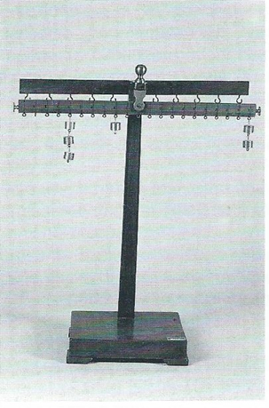

Apparecchio per le leve di primo genere
Scuola di provenienza: Liceo Statale "P. E. Imbriani", Avellino
Settore: Meccanica
Costruttori: Sconosciuto
Materiali: Legno di noce e ottone
Accessori: Pesetti
Stato di conservazione: Buono
Descrizione: È un dispositivo per studiare le forze in equilibrio nelle macchine semplici, come le leve e le carrucole. Lo strumento è costituito da un´asta verticale, alla cui sommità sono inserite un´asta fissa con ganci di sospensione ed una leva, ossia una sbarra rigida girevole attorno ad un asse, detto fulcro. Tale leva è munita di ganci ai quali verranno sospesi dei pesi che rappresentano la resistenza e la forza motrice. Disponendo opportunamente tali pesi si studieranno le posizioni di equilibrio nelle leve: si ha equilibrio quando la forza motrice e la resistenza sono inversamente proporzionali ai loro bracci. Ad alcuni ganci vi sono delle carrucole fisse per le quali si ha equilibrio quando la forza motrice e la resistenza hanno lo stesso modulo.